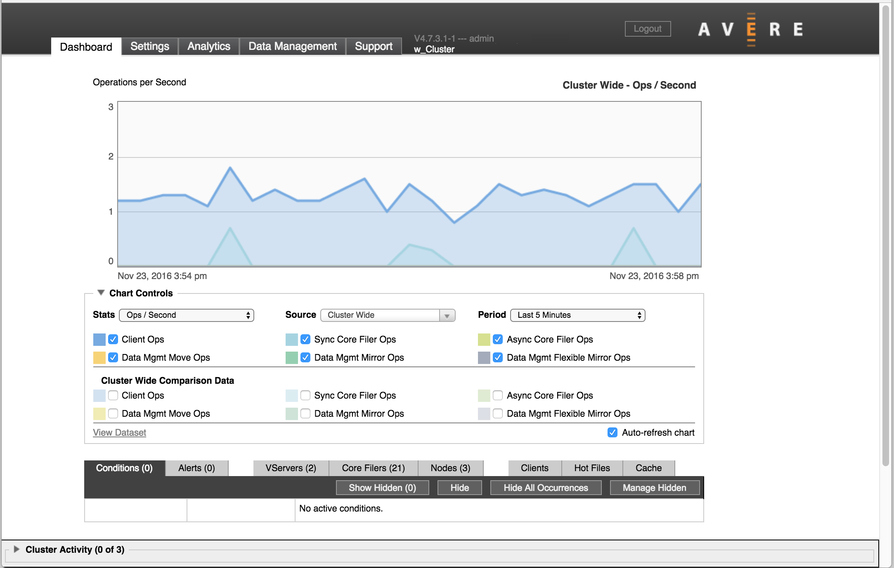
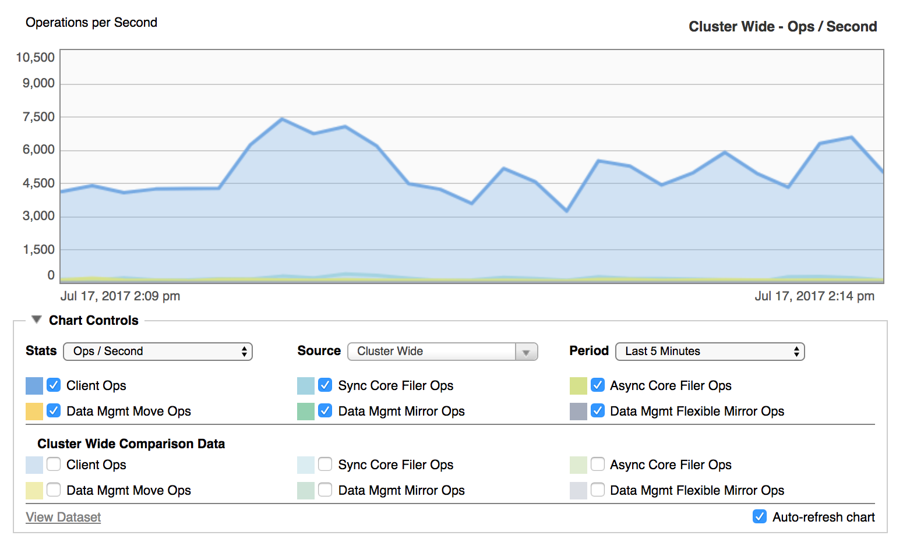
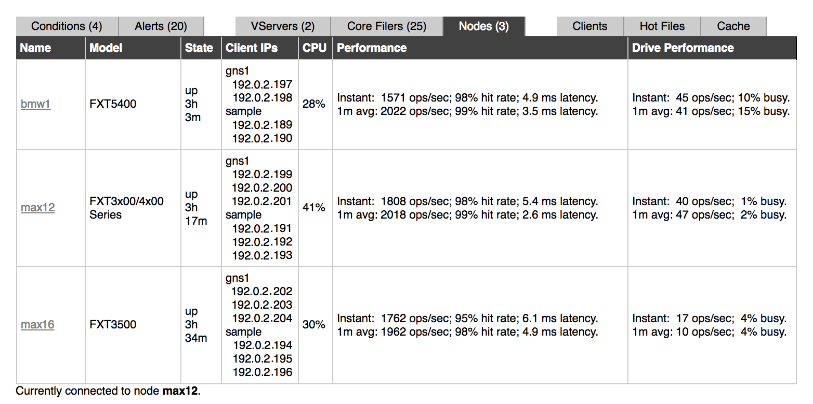
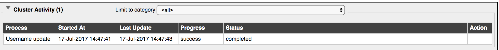
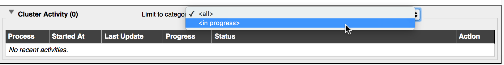

Monitoring the Cluster with the Avere Control Panel Dashboard¶
Use the Dashboard tab in the Avere Control Panel to monitor how well a cluster is operating, and to detect any problems. Situations that might need attention are displayed as conditions or alerts.
The dashboard also is your first stop for troubleshooting any cluster issues.
Avere Systems recommends that you check the Dashboard tab at least daily and investigate any red system errors or yellow alerts. For more information read Monitoring Conditions and Alerts.
Overview of the Dashboard¶
{kind=link}
The Dashboard tab is divided into the following sections:
Performance Graph¶
In the center, a chart displays system performance. You can customize what is shown on the with the Chart Controls underneath the diagram. By default, the chart updates continuously to show current activity.
For more information about configuring and interpreting the performance graph, read Viewing System Performance.
{kind=link}
Status Tabs¶
Under the performance graph, the status bar provides easy access to information about the cluster.
{kind=link}
It includes the following tabs, which are described in more detail in Dashboard Status Tabs:
Conditions – Notifications about current operational status or system errors that are affecting the operation of the cluster. For example, an unreachable core filer creates a condition notification.
Alerts – System warnings and notifications about one-time events that have happened but are not ongoing. For example, a node restart creates an alert notification.
Note
Conditions and Alerts are described in Monitoring Conditions and Alerts.
VServers – A list of the cluster’s virtual servers (vservers), including details like each vserver’s state, its client-facing IP addresses, and its associated core filers. Read VServers for details.
Core Filers – A list of the cluster’s core filers, including details like each core filer’s state, cache policy, network name, associated vservers, and information about modified files in the cluster cache that are waiting to be written to the core filer. Read Core Filers for details.
Nodes – A list of all the nodes that make up the cluster, with details including each node’s model, state, client-facing IP addresses, current CPU usage, and performance information. Read Nodes for details.
Clients – A configurable list of clients using the cluster. Filters control the list to show clients by source, connection type, activity level, and other qualities. Read Clients Status Tab for details.
Hot Files – Information about the most active files on the cluster, including name, file type, node, and throughput. Read Hot Files for details.
Cache – Data about cache space, including capacity and current utilization. Data can be viewed by node or for the whole cluster. Read Cache for details.
Cluster Activity¶
The cluster activity panel appears at the bottom of each page in the Avere Control Panel. It shows current and recent cluster-level activities.
Click the triangle at the left of the Cluster Activity label to show the activity table.
{kind=link}
Depending on the activity, data can include this kind of information:
- Process name
- Start time
- Last update time
- Progress, if available
- Process status
- Action to take, if applicable
The Limit to category drop-down control lets you filter the list. Choose All to show active and recently completed activities, or choose In progress to display only activities that are currently active. Other categories can appear on the list depending on the type of recent activities – for example, if software is being updated on the cluster, an upgrade filter might be shown.
{kind=link}
Activities are cleared from the list after about ten minutes.